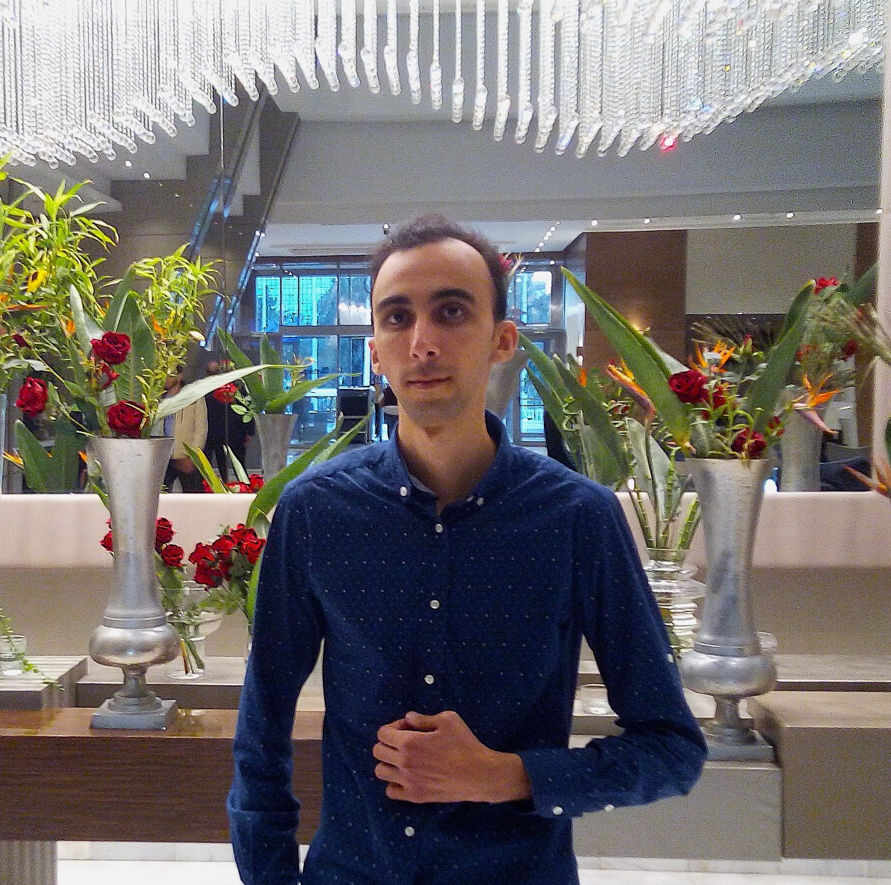

Hey there! I'm Rami Ben Othmen

I'm a passionate and dedicated software developer with a Professional Master's Degree in Engineering of Decisional Information Systems and a Bachelor's Degree in Software Development. With a strong foundation in software engineering and a keen interest in business intelligence, I strive to create innovative and efficient solutions that drive meaningful results.